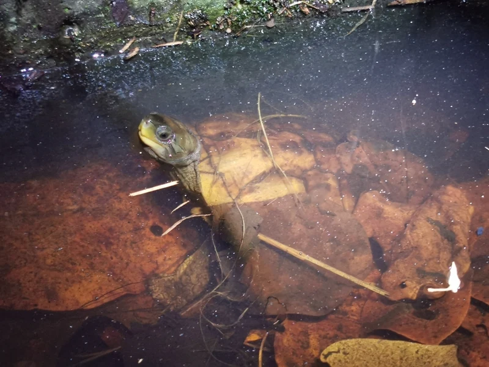

沖縄県八重山諸島固有の日本在来種。ミナミイシガメの亜種で、八重山に隔離分布する希少種。野生個体は採集禁止。飼育は合法的に入手したCB個体のみ。

1年後の甲長は7〜10cm程度。石垣島・西表島の水田・湿地・マングローブ周辺に生きる亜熱帯種で、温かい水温を好む。水中と陸場を行き来し、採食時は水面に出てくる個体も見られる。雑食性で植物・小型水生生物を食べる。
10年後は甲長12〜17cm、重さ200〜450g程度が多い。45〜60cm水槽で安定して飼えるサイズ感。15〜30年の寿命があり、亜熱帯種のため水温が低くなる冬の保温管理が通年維持の核心になりやすい。
ヤエヤマイシガメは沖縄県の亜熱帯気候に適応した種で、本州の冬の気温・水温では活動が大幅に低下しやすい。「日本産の亀だから冬も耐えられる」というイメージは本種には当てはまりにくく、通年ヒーターによる水温維持が安定飼育の前提になりやすい。また飼育できるのは合法的に入手したCB個体のみとなっている点を、飼育開始前に確認しておくことが大切。
沖縄県石垣島・西表島の水田・湿地・小川・マングローブ周辺に生息。温暖な亜熱帯気候に適応しており、水温が低いと活動が低下する。植物食傾向もあるが基本的には雑食。
亜熱帯性のため水温22℃以上を保つことが重要。60cm以上の水槽で陸場を設置し、バスキングスポットを確保してください。
← 横にスクロールできます
| 種名 | 甲長 | 難易度 | 必要水槽 | 特徴 |
|---|---|---|---|---|
| ヤエヤマイシガメ このページ | 15〜20cm | 中級 | 60cm〜 | 本種・八重山固有亜種 |
| ミナミイシガメ | 15〜20cm | 中級 | 60cm〜 | 基亜種・流通多 |
| ニホンイシガメ | 13〜20cm | 中級 | 60cm〜 | 日本固有種 |
| ハナガメ | 20〜25cm | 入門〜中級 | 60〜90cm | 首縞が美しい |